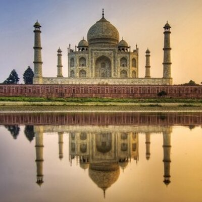

Seven Wonders Of the World |
||
|---|---|---|
|  | Taj Mahal | |
| Machu Picchu | ||
| Chichen Itza | ||
| Christ the Redeemer | ||
| The Great Wall Of China | ||
| Roman Colosseum | ||
| Petra Jordan | ||
| The Taj Mahal is a white marble mausoleum located on the southern bank of the Yamuna River in the Indian city of Agra. It was commissioned in 1632 by the Mughal emperor Shah Jahan to house the tomb of his favorite wife of three, Mumtaz Mahal. | ||